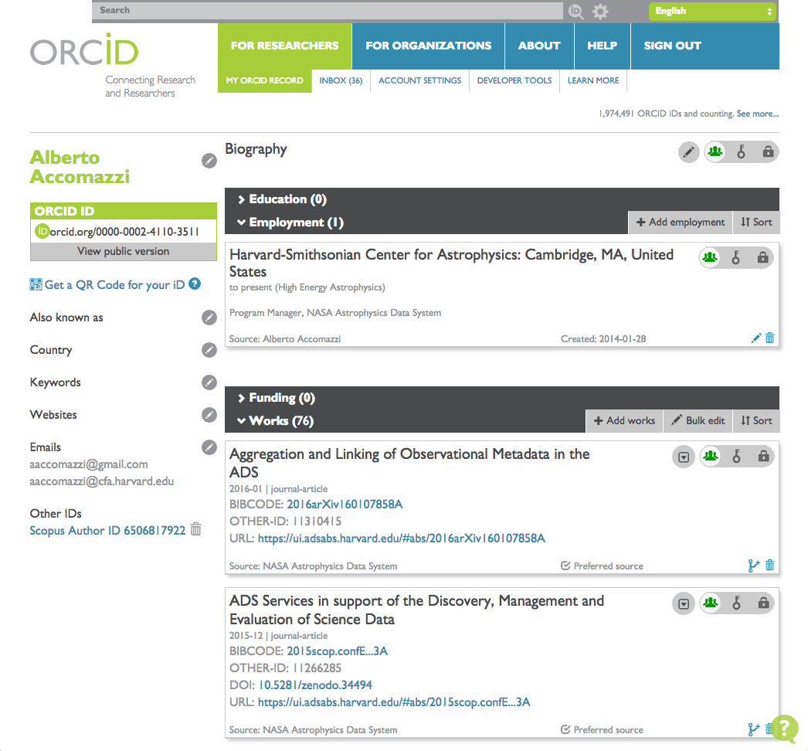
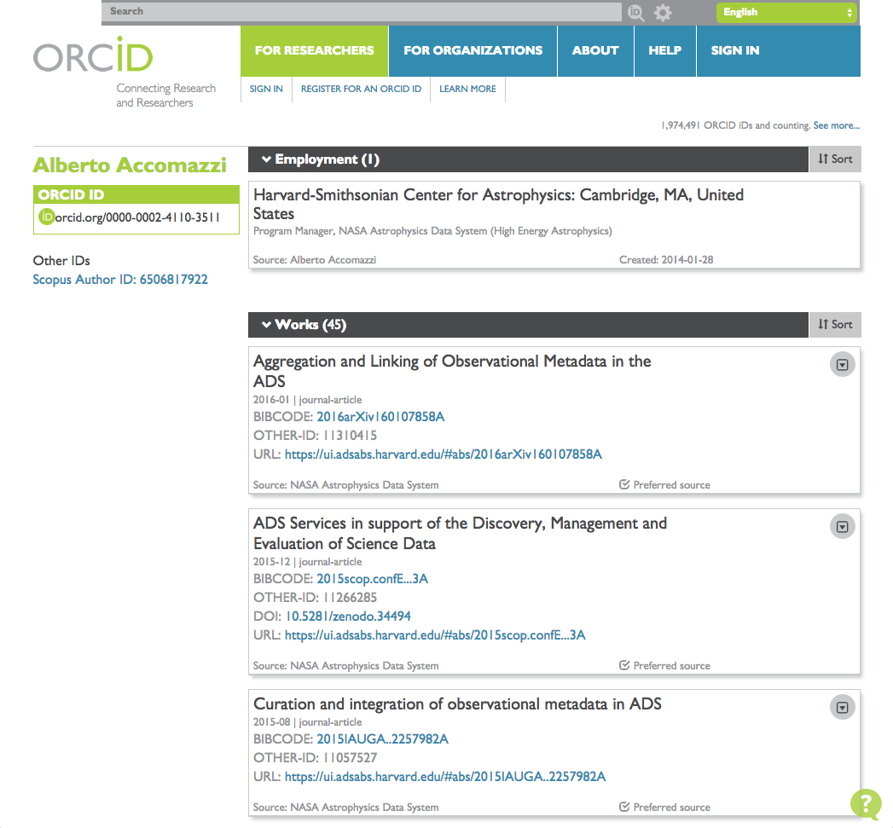
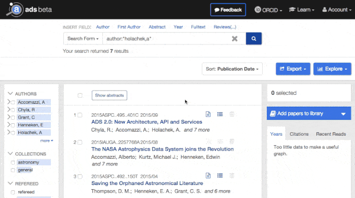

Science Explorer
Science Explorer
Claiming Papers And Finding People with ORCID
Alberto Accomazzi (ADS PI)
10 Mar 2016
Claim your ORCID papers easily in ADS
This post was originally published elsewhere and has been put here with the authors permission. You can see where it was originally published here.
If you have published a paper recently, you have probably come across the acronym ORCID at some point during the article submission process. Or you may have seen references to ORCID in your organization’s scientific staff database, AAS membership profile, or research evaluation process. So what exactly is ORCID? ORCID is an acronym which stands for “Open Researcher and Contributor ID,” designed to uniquely identify people involved in research activities. The term is used to refer to both the identifier standard (a 16-character string) as well as the organization which creates these ids and maintains their registry.
For researchers, ORCID identifiers are useful in a couple of ways:
-
they provide a unique way to identify you as an individual, removing ambiguity among people who have similar names
-
they provide a global identifier recognized by an increasingly large number of organizations, including publishers, funding agencies, and information systems
Getting your ORCID is simple! All you have to do is go to the ORCID website and register to obtain a unique identifier which you can use immediately. My own id is 0000-0002-4110-3511, and I have used it in my arXiv user profile, my AAS membership profile, my Elsevier profile, my Zenodo account, and during the submission of a few papers I published recently. One of the features of ORCID’s registry is the ability for a user to manage his or her profile by adding information about one’s employment, funding, or publications, which can then be shared publicly. As an example, here is my public ORCID profile: http://orcid.org/0000-0002-4110-3511
 
Fig 1: Private and public views of Alberto Accomazzi’s ORCID profile. Some records in the “Works” section are not visible in the public view since they are marked as private.
So how is ADS collaborating with ORCID?
-
We’re facilitating the claiming process: You can use the custom ADS ORCID-claiming interface to easily claim all of your papers.
-
We’re leveraging ORCID data in our search results: By indexing ORCID identifiers, we can help remove name ambiguity in a set of papers.
The two goals are connected: claimed papers in ADS become not only part of a user’s ORCID profile, but are indexed in ADS as well, supporting the disambiguation of people at search time.
We’re pleased to announce that the new ADS interface (code named “Bumblebee”) includes the capability of claiming papers through as well as searching by ORCID identifier. Claiming of papers is accomplished starting from the ADS interface through a set of simple steps:
-
Authenticate with ORCID by selecting the proper option in the ORCID pull-down menu on the top bar (this will establish the connection through which claims are sent from ADS to your ORCID profile)
-
Update your ADS user profile to ensure that all your name variations are properly displayed (this will help you find and claim all your papers)
-
View your existing claims (in case any have been made through other systems)
-
Search ADS for your papers and add to the list (by claiming records using the “Claim in ORCID” button)

- Fig. 2: Claiming records is simple: activate ORCID mode, then click on “Claim in ORCID”*
Claims made using this process are sent to your ORCID profile and indexed in ADS within 24 hours. We should point out that ORCID allows users to control a variety of privacy settings, including the ability to keep one’s publication claims private. By default, ADS marks claims made using our interface as public, since its main purpose is to help people find more accurately the papers you have published. Keeping these claims public ensures that ADS and other systems are able to discover and index them, and keeps people making the claims honest.
Once ORCID data has been indexed, other people can search for a researcher’s papers using his or her ORCID identifier. You can do this by specifying the search field “orcid” followed by the person’s id. For example, this is what you would use to find my papers: orcid:0000-0002-4110-3511. This list will include papers which a user has claimed as well as papers for which ORCIDs were collected during the manuscript submission process. As more and more publishers start requiring ORCIDs for papers they publish and as ADS enriches its metadata with ORCIDs aggregated from collaborators such as arXiv, the need for individual users to keep claiming new papers should eventually subside.
ORCID integration in ADS started in 2015 with support from the AAS and is still work in progress. During 2016 we intend to make the claiming system more robust and enhance the interface to allow a user-friendly way to search for an author’s publications without requiring users to know that author’s ORCID id. An additional enhancement we are considering is sending alerts to registered users when papers matching their names appear in ADS, prompting them to claim the papers if no ORCID data is available. To find out more about our plans, please take a look at a recent presentation we gave at the AAS Jan 2016 meeting. We would love to hear your feedback and ideas on this topic!
Please Note: You may also want to read a nice step-by-step guide of the claiming process created by the ESO Library.